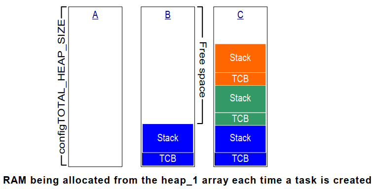

10.1.2. FreeRTOS内存管理
在C语言的库函数中，有malloc, free等函数，但在FreeRTOS中，他们不适用
不适用在资源紧缺的嵌入式系统中
这些函数的实现过于复杂，占据的代码空间大
并非线程安全
运行有不确定性，每次调用这些函数时花费的时间可能都不相同
内存碎片化
使用不同的编译器时，需要进行复杂的配置
有时难以调试
10.1.2.1. FreeRTOS内存管理方法
FreeRTOS中内存管理的接口函数为: pvPortMalloc , vPortFree ,对应C库的malloc, free
文件 |
优点 |
缺点 |
heap_1.c |
分配简单，时间确定 |
只分配，不回收 |
heap_2.c |
动态分配，最佳匹配 |
碎片，时间不确定 |
heap_3.c |
调用标准库函数 |
速度慢，时间不定 |
heap_4.c |
相邻空闲内存可合并 |
可解决碎片问题，时间不定 |
heap_5.c |
在heap_4基础上支持分割的内存块 |
可解决碎片问题，时间不定 |
10.1.2.2. Heap_1
它只实现了pvPort, 没有实现vPortFree
如果你的程序不需要删除内核对象，那么可以使用heap_1
实现最简单
没有碎片问题
一些要求非常严格的系统里，不允许使用动态内存，就可以使用heap_1
它的实现原理很简单，首先定义一个大数组
/* A few bytes might be lost to byte aligning the heap start address. */
#define configADJUSTED_HEAP_SIZE ( configTOTAL_HEAP_SIZE - portBYTE_ALIGNMENT )
/* Allocate the memory for the heap. */
#if ( configAPPLICATION_ALLOCATED_HEAP == 1 )
/* The application writer has already defined the array used for the RTOS
* heap - probably so it can be placed in a special segment or address. */
extern uint8_t ucHeap[ configTOTAL_HEAP_SIZE ];
#else
static uint8_t ucHeap[ configTOTAL_HEAP_SIZE ];
#endif /* configAPPLICATION_ALLOCATED_HEAP */
然后，对于pvPortMalloc调用时，就从这个数组中分配空间
FreeRTOS在创建任务时，需要2个内核对象: task control block(TCB), stack
使用heap_1时，内存分配过程如下图所示
A: 创建任务之前整个数组都是空闲的
B: 创建第一个任务之后，蓝色区域被分配出去了
C: 创建第三个任务之后的数组使用情况

10.1.2.3. Heap_2
Heap_2之所以还保留，只是为了兼容以前的代码．新设计中不再推荐使用Heap_2,建议使用Heap_4来代替Heap_2，更加高效
10.1.2.4. Heap_3
Heap_3使用标准C库里的malloc, free函数，所以堆大小由链接器的配置决定
10.1.2.5. Heap_4
跟Heap_1和Heap_2一样，Heap_4也是使用大数组来分配内存
Heap_4使用 首次适应算法(first fit) 来分配内存．它还会把相邻的空闲内存合并为一个更大的空闲内存，这有助于较少内存
的碎片问题
首次适应算法：
假设堆中有3块空闲内存:5字节，200字节，100字节
pvPortMalloc想申请20字节
找出第一个能满足pvPortMalloc的内存: 200字节
把它划分为20字节，180字节
返回这20字节的地址
剩下的180字节仍然是空闲状态，留给后续的pvPortMalloc使用
备注
Heap_4执行的时间是不确定的，但它的效率高于标准库的malloc, free
10.1.2.6. Heap_5
Heap_5分配内存，释放内存的算法是跟Heap_4一样的．不同的是，Heap_5并不局限于管理一个大数组:它可以管理多块，分割开的内存.
既然内存是分割开的，那么就需要进行初始化，确定这些内存块在哪，有多大
typedef struct HeapRegion
{
uint8_t *pucStartAddress;
size_t xSizeInBytes;
} HeapRegion_t;
HeapRegion_t xHeapRegions[] = {
{(uint8_t *)0x80000000UL, 0x10000},
{(uint8_t *)0x90000000UL, 0xa0000},
{NULL, 0}
};
void vPortDefineHeapRegions(const HeapRegion_t * const pxHeapRegions);
10.1.2.7. Heap相关的函数
void *pvPortMalloc(size_t xWantedSize);
void vPortFree(void *pv);
size_t xPortGetFreeHeapSize(void);
//返回程序运行过程中，空闲内存容量的最小值,只有Heap_4, Heap_5支持此函数
size_t xPortGetMinmumEverFreeHeapSize(void);
malloc失败的钩子函数
void *pvPortMalloc(size_t xWantedSize)
{
...
#if (configUSE_MALLOC_FAILED_HOOK == 1)
if(pvReturn == NULL)
{
extern void vApplicationMallocFailedHook(void);
vApplicationMallocFailedHook();
}
#endif
}
备注
使用此钩子函数需要在FreeRTOSConfig.h中，把configUSE_MALLOC_FAILED_HOOK定义为1